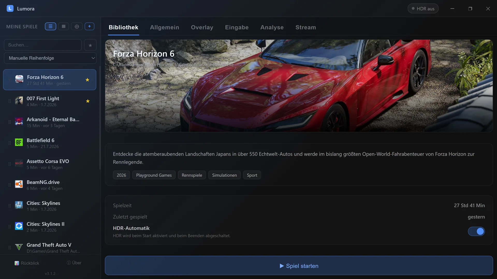

Alle deine Spiele. Ein Launcher.
Mit automatischem HDR und Gaming-OSD.
Steam, Epic, GOG, Xbox & mehr — Lumora vereint deine ganze Spielesammlung in einer schönen Cover-Bibliothek. Am Schreibtisch mit der Maus, auf dem Sofa komplett per Gamepad. Mit automatischem HDR, Performance-OSD ohne Afterburner & Co. und Game-Streaming per Link.
Lumora ist ein Windows-Programm
Auf dem Handy lässt es sich nicht installieren. Öffne diese Seite an deinem Windows-PC — oder schick sie dir schnell selbst rüber:
✓ Link kopiert – jetzt am PC einfügen
🛡️ Windows zeigt eine Sicherheitswarnung? So geht's weiter
- Auf „Weitere Informationen" klicken.
- Dann auf „Trotzdem ausführen".
— Downloads

Listenansicht – Details, Beschreibung & HDR-Schalter pro Spiel
Tippen zum Vergrößern
So funktioniert's
Drei Schritte, fertig.
Einmal einrichten, danach läuft alles automatisch im Hintergrund.
Spiel hinzufügen
Über den Scanner automatisch erkennen lassen oder manuell per .exe oder .lnk hinzufügen. Spiele-Cover werden automatisch geladen.
Starten
„Spiel starten" klicken — Lumora aktiviert HDR und startet das Spiel. Ein kurzer Moment Vorbereitung, dann geht's los.
Spielen & vergessen
Nach dem Beenden des Spiels schaltet Lumora HDR automatisch wieder ab. Kein manuelles Eingreifen nötig.
Dein Spiel. Deine Werte. Dein Stil.
Das Performance-OSD legt FPS, GPU- und CPU-Werte über jedes randlos laufende Spiel — und zwar ohne MSI Afterburner, ohne RTSS, ohne Bastelei. Einschalten, zocken, alles im Blick.
FPS & Frametime-Graph
Präzise Messung über Intels PresentMon-Technik — für jedes Spiel, jede Engine. Läuft RTSS bereits bei dir? Dann nutzt Lumora es einfach automatisch mit.
CPU-Temperatur & -Verbrauch — endlich ohne Zusatztools
Was sonst nur mit Afterburner & Co. geht, erledigt Lumora über den signierten Open-Source-Treiber PawnIO: ein Klick, eine Windows-Bestätigung, fertig. AMD Ryzen und Intel Core.
GPU-Werte direkt vom Treiber
Last, Temperatur, Takt, Verbrauch und VRAM — direkt aus NVIDIA- (NVML) bzw. AMD-Treiber (ADL). Mehrere Grafikkarten? Lumora nimmt automatisch die schnelle, du kannst aber auch fest wählen.
6 Designs, deine Werte
Von „Kompakt" bis zur horizontalen Kachel-Leiste — plus freie Auswahl, welche Werte du sehen willst. Größe, Transparenz und Bildschirm-Position inklusive.
Live-Edit — direkt im Spiel
Das Alleinstellungsmerkmal: OSD im laufenden Spiel umgestalten. Per Maus ziehen, Design durchschalten, Werte an- und abwählen — oder das alles bequem mit dem Gamepad vom Sofa aus.
Blitzschnell ein- und ausgeblendet
Frei belegbarer Hotkey auf Tastatur und Gamepad-Kombination — funktioniert mitten im Spiel, auch im randlosen Vollbild.
Einrichtung? Ein Dialog, eine Windows-Bestätigung — Lumora erledigt den Rest und zeigt dir dabei transparent jeden Schritt an. In den Einstellungen siehst du jederzeit, aus welcher Quelle jeder Wert kommt.
FPS, GPU- & CPU-Werte im Spiel anzeigen – so funktioniert das Gaming-OSD →
Funktionen
Alles drin, was du brauchst.
Kein Bloat, keine Cloud, keine Accounts.
Alle Stores, ein Scanner
Erkennt Spiele aus Steam, Epic, GOG, Ubisoft, Xbox Game Pass, EA, Battle.net, Rockstar, Amazon und Riot automatisch. Eigene Ordner lassen sich ergänzen.
Cover-Bibliothek
Umschaltbare Raster- und Listenansicht mit hübscher Cover-Art. Per ▶ direkt aus dem Raster starten.
Spielzeit, zuletzt gespielt & Rückblick
Erfasst deine Spielzeit store-übergreifend an einem Ort. Der Spielzeit-Rückblick fasst Gesamtzeit, Top-Spiele und Lieblings-Genre hübsch zusammen.
Performance-OSD im Spiel
FPS, Frametime-Graph, GPU- und CPU-Werte über jedem randlosen Spiel — ohne Afterburner oder RTSS, live im Spiel anpassbar. Alle Details ↑
Spiel live per Link teilen
Streame dein Spiel mit Ton per Link – flüssig in Full HD (1080p60), auf Wunsch bis 4K. Zuschauer öffnen nur den Link im Browser, ganz ohne Installation. Die Verbindung richtet sich automatisch ein. Mehr zum Streaming → · Discord-Streaming ohne Nitro? Der Qualitäts-Vergleich →
Favoriten, Suche & Sortierung
Favoriten markieren, blitzschnell suchen und nach Name, Spielzeit oder zuletzt gespielt sortieren.
Gamepad-Steuerung
Die komplette Oberfläche lässt sich mit einem Xbox-Controller bedienen – wohnzimmertauglich am TV. D-Pad/Stick navigieren, A wählt und startet, B geht zurück. Beim Durchblättern wird das Spiel direkt angezeigt. Ganzen Launcher per Gamepad bedienen (Couch-Gaming) →
Frei belegbarer Hotkey
Ein globaler Hotkey holt Lumora überall in den Vordergrund oder versteckt es wieder – wahlweise als Tastenkombination oder als Gamepad-Knopf-Kombination (z. B. Xbox-Knopf).
Automatische Updates
Lumora prüft beim Start auf neue Versionen und aktualisiert sich auf Wunsch selbst – kein manuelles Nachladen mehr.
Cover & Artwork – automatisch oder selbst gewählt
Cover, Hero-Banner sowie deutsche Beschreibung, Genre und Release-Jahr werden automatisch geladen. Passt etwas nicht, suchst du selbst aus mehreren Quellen (Steam, Microsoft Store, optional SteamGridDB) oder legst ein eigenes Bild ab.
Automatisches HDR
HDR geht beim Spielstart an und beim Beenden wieder aus — pro Spiel ein- und ausschaltbar, auch für Nicht-HDR-Spiele nutzbar.
Startoptionen
Eigene Startargumente pro Spiel und „als Administrator starten" — ideal für Mods und Spezialfälle.
Anpassbar & griffbereit
Wählbare Akzentfarben, System-Tray und Autostart mit Windows. Dynamischer Hintergrund aus dem Spiel-Artwork.
Schlank, offline & ohne Account
Keine Cloud, keine Registrierung, keine Hintergrundprozesse nach dem Schließen. Internet nur fürs Laden von Covern & Infos.
Neuerungen
Was sich getan hat.
Lumora wird laufend weiterentwickelt. Die wichtigsten Änderungen je Version:
- Bildschirm-Streaming repariert – ein stummes System (gerade kein Ton) hat den Start bisher blockiert; jetzt läuft der Stream sofort, egal ob Ton abgespielt wird oder nicht.
- Hardware-Anzeige ruhiger und schneller – die CPU-Auslastung ist geglättet (kein Zappeln, wie im Task-Manager), Temperatur und Verbrauch reagieren flüssiger.
- Lumora vollständig auf Englisch – auch die letzten dynamisch gesetzten Texte (OSD-Werte, Farben, Schaltflächen) erscheinen im Englisch-Modus jetzt auf Englisch.
- Schlanke Updates repariert – neue Versionen laden sich jetzt zuverlässig als kleines Paket herunter; der Update-Vorgang bleibt nicht mehr hängen und meldet Fehler klar, statt stehen zu bleiben.
- Lumora lückenlos auf Englisch – die letzten noch deutschen Texte (Info-/Transparenz-Dialog, SteamGridDB-Anleitung, FritzBox-Hilfe zur Portfreigabe, OSD-Erklärungen) erscheinen im Englisch-Modus jetzt vollständig auf Englisch.
- Lumora jetzt auf Englisch – die komplette Oberfläche in Deutsch und Englisch, umschaltbar in den Einstellungen und schon bei der Installation wählbar.
- 4K-Streaming über Mobilfunk gezähmt: Bei schwachem Empfang senkt Lumora die Bitrate jetzt sofort und tief genug (bis 4 Mbit) – ein stabiles Bild steht in Sekunden statt nach mehreren Anläufen.
- Ton auf jedem System sauber: auch mit 44,1-kHz-Geräten (Hi-Fi-DACs) oder Surround-Ausgängen bleibt der Stream-Ton korrekt und synchron.
- Streaming robuster: automatische Erholung bei kurzem Ausfall des Übertragungsdienstes, klare Meldung bei belegtem Port, scharfes Bild beim Wechsel des Fensters auf Vollbild, Farb-Hinweis bei HDR-Bildschirmen.
- Schlankere Updates: Neue Versionen laden künftig nur noch die geänderten Teile statt des kompletten Pakets – schneller und datensparsamer.
- Der Stream passt sich dem Empfang an: Hat ein Zuschauer schwachen Empfang (z. B. unterwegs im Mobilfunk), senkt Lumora die Bitrate automatisch in Stufen, bis das Bild stabil läuft – und hebt sie wieder an, sobald die Verbindung es hergibt. Abschaltbar in den Stream-Einstellungen.
- Ruckler und Ton-Aussetzer beseitigt: Zwei tief sitzende Engpässe in der Übertragungskette sorgten für periodische Aussetzer – beide aufgespürt und behoben. 4K mit 60 fps läuft jetzt durchgehend glatt.
- Bild und Ton dauerhaft synchron: Auch bei Ton-Pausen, Fenstergrößen-Wechseln oder stundenlangen Streams baut sich keine Verzögerung mehr auf.
- Stream-Start in rund 2 Sekunden statt 10 – Router-Abfragen laufen parallel, der öffentliche Link steht fast sofort.
- Bildschirm-Streams GPU-direkt: Die Aufnahme geht ohne Umweg über den Hauptprozessor in den Encoder – weniger Last, mehr Reserven fürs Spiel.
- Web-Player: dezente Wiedergabedauer-Anzeige · Bedienelemente per Tipp ein- und ausblendbar · Standard-Empfangspuffer auf 300 ms erhöht (ruhigeres Bild bei schwankender Leitung).
- Neu: Gruppen-Stream mit Raumcodes – „Gruppe starten" erzeugt einen kurzen Code (z. B. TG7KP2), Freunde tippen ihn in Lumora ein, der eigene Stream startet automatisch mit. Zuschauer öffnen den Gruppen-Link im Browser und sehen alle Streams im Grid – per HTTPS, damit auch auf dem iPhone.
- Die Gruppe hängt an niemandem: Wer seinen Stream stoppt, bleibt Mitglied (als „pausiert" sichtbar); wer Lumora schließt, verlässt nur sich selbst – für alle anderen läuft alles ununterbrochen weiter, Code und Link bleiben gültig.
- Unabhängig bleiben: Die Vermittlung ist ein kleines PHP-Skript, das der Installation beiliegt – auf eigenen Webspace legen und die Adresse in Lumora eintragen. Der Video-Traffic läuft nie über einen Server, alles bleibt direkt.
- Grid: Vollbild für die ganze Ansicht, Doppelklick auf eine Kachel zeigt nur diese Person bildschirmfüllend, Info-Anzeige (fps/Auflösung/Bitrate) je Kachel zuschaltbar.
- Fenster-Freigabe: Der Ton kommt jetzt gezielt nur noch vom geteilten Fenster/Spiel selbst, nicht mehr vom ganzen PC (z. B. kein Browser-Ton mehr im Stream).
- Live-Vorschau im Stream-Tab zeigt jetzt unverfälschte Farben · Rechtsklick-Einfügen in allen Eingabefeldern.
- Ton-Aussetzer im Stream behoben: Je nach System mischte die Tonaufnahme regelmäßig winzige Stille-Blöcke in den laufenden Ton – im 6-Stunden-Dauertest aufgespürt und beseitigt.
- Live-Vorschau in neuer Qualität: echtes Video in voller Schärfe statt Standbild-Folge, startet praktisch sofort mit dem Stream – und pausiert automatisch, während gespielt wird.
- Schnellerer Streamstart: Die Router-Prüfung läuft im Hintergrund, Bild und Ton stehen sofort bereit; Zuschauer sehen beim Einschalten schneller ein Bild.
- Web-Player: Der Hinweis, den Ton per Tipp zu aktivieren, erscheint jetzt zuverlässig als deutliche Schaltfläche mitten im Bild.
- Web-Player am Handy stabil: Wechselt man für ein paar Minuten in eine andere App oder kommt eine Nachricht herein, kommt das Bild nach der Rückkehr zuverlässig von selbst zurück – auch nach längerer Pause.
- Live-Vorschau im Stream-Tab: Du siehst sofort, was gerade übertragen wird – ressourcenschonend im Hintergrund.
- Streamen per Hotkey: Eine frei wählbare Taste startet und stoppt die Freigabe des laufenden Spiels – mit akustischer Rückmeldung.
- Aufgeräumter Stream-Bereich: klar gegliedert in Aufnahme, Stream und Verbindung. Neue Standardqualität: 1080p, 60 fps, 8 Mbit/s.
- App-Symbole in der Fensterauswahl – die richtige Quelle ist auf einen Blick erkennbar.
- Web-Player: Lautstärkeregler und eine klare Aufforderung, den Ton zu aktivieren; auf dem Handy läuft der Stream auch bei App-Wechsel oder eingehender Nachricht weiter.
- Bessere Verbindungshilfen: konkrete Router-Hinweise (u. a. FritzBox), IPv6-Direktweg als Alternative und Unterstützung für TURN-Server.
- Auto-Update läuft künftig ohne Setup-Dialog durch · deutlich kleinerer Download.
- Fenster-Freigabe vollständig: Jetzt erscheinen wirklich alle offenen Fenster in der Auswahl – auch Explorer und Edge, die vorher manchmal fehlten.
- Web-Player fürs Handy: responsives Layout, das Video per Fingergeste/Mausrad zoombar und verschiebbar, Info-Anzeige (FPS/Auflösung) per Knopf dauerhaft einblendbar.
- Freigabelink: Beim schnellen Kopieren direkt nach dem Start kommt jetzt zuverlässig der öffentliche Link statt versehentlich der internen Adresse.
- Klarer Hinweis, falls der NVIDIA-Treiber fürs Streaming zu alt ist.
- Streaming auf AMD-Grafikkarten: Das schwarze Bild bei AMD-Encodern ist behoben – Streaming läuft jetzt auf NVIDIA, AMD und Intel gleichermaßen.
- Fenster-Streaming: Ändert das aufgenommene Fenster seine Größe (z. B. Video → Vollbild), läuft der Stream ohne Abbruch weiter – mit sauberen Rändern statt abgeschnittenem Bild.
- Ein alter Autostart-Eintrag aus der Zeit vor der Umbenennung wird automatisch entfernt.
- Streaming-Fix: Wurde ein zuvor gewähltes Fenster inzwischen geschlossen, konnte der Stream trotz „läuft"-Anzeige kein Bild liefern. Lumora fällt jetzt automatisch auf den ganzen Bildschirm zurück; ein nicht mehr verfügbares Fenster führt zu einem klaren Hinweis statt zu einem Abbruch.
- Installationsort frei wählbar: Der Installer fragt jetzt, wohin Lumora installiert werden soll – statt den Ort einfach vorzugeben.
- Mehr Transparenz: Der „Über"-Dialog und die Website führen jetzt alle eingesetzten Open-Source-Bausteine samt Lizenz auf – übersichtlich und nachvollziehbar.
- Spiel live per Link streamen: in bis zu 4K mit Ton, wahlweise ganzer Bildschirm oder gezielt ein Fenster/Spiel – Zuschauer sehen alles im Browser, ganz ohne Installation.
- Ton komplett: Der Spiel- und System-Ton wird zuverlässig mitübertragen – auch wenn es zwischendurch mal still ist (Menü, Werbung, Standbild).
- Zuschauer im Blick: Sieh, wer gerade zuschaut, und wirf ungebetene Gäste mit einem Klick raus. Ein einstellbarer Puffer sorgt für ein ruhiges Bild auch bei schwankender Leitung.
- HDR-Spiele werden im Stream automatisch natürlich dargestellt – hell und farbecht statt ausgewaschen.
- Gaming-OSD: FPS mit Verlaufskurve sowie GPU- und CPU-Werte (Temperatur und Auslastung) direkt über dem laufenden Spiel — 6 Designs, frei wählbare Werte, Größe, Transparenz und Position einstellbar.
- Ohne Zusatzprogramme: Lumora holt sich alle Werte selbst — kein separates Tool nötig. Die Einrichtung ist ein Dialog plus eine Windows-Bestätigung. Ein vorhandenes MSI Afterburner/RTSS wird automatisch mitgenutzt.
- Live-Edit im Spiel: OSD per Maus verschieben, Design und Werte direkt im Spiel umschalten — auch komplett per Gamepad.
- OSD-Tastenkürzel für Tastatur und Gamepad-Kombination, frei belegbar.
- Übersichtlichere Einstellungen: aufgeräumte Reiter direkt in der Oberfläche statt im Dialog; eine Anzeige verrät, woher jeder Wert stammt.
- Mehrere Grafikkarten werden erkannt (mit manueller Auswahl) · Grafikspeicher-Anzeige jetzt auch für AMD · saubere Deinstallation.
- Spielzeit-Rückblick: Überblick über Gesamtspielzeit, meistgespielte Titel, Lieblings-Genre und Favoriten.
- Gamepad im Raster: A startet das ausgewählte Spiel direkt – mit HDR-Einstellung je Spiel.
- Einstellungen werden zuverlässiger gespeichert – deine Eingaben und Tastenkürzel bleiben sicher erhalten.
- „Minimiert starten" greift nur noch beim automatischen Start mit Windows.
- Komplette Gamepad-Steuerung der Oberfläche – wohnzimmertauglich am TV, mit hilfreichen Hinweisen und Update-Infos direkt in der App.
- Frei belegbarer Hotkey als Tasten- oder Gamepad-Knopf-Kombination, holt Lumora überall in den Vordergrund.
- Automatische Updates – Lumora prüft beim Start und aktualisiert sich auf Wunsch selbst.
- Neuer Name & frisches Design: aus dem HDR-Tool wird Lumora.
- Erweiterte Cover- & Banner-Suche aus mehreren Quellen oder mit eigenem Bild.
- Favoriten oben anpinnen, Suche über alle Laufwerke, alphabetische Vorsortierung.
- Zuverlässigere Spielzeit-Erfassung und Verbesserungen beim Spielstart über alle Stores hinweg.
Installation
Herunterladen & loslegen.
Der Installer richtet alles ein — kein manuelles Entpacken nötig.
Setup-Datei Lumora Setup 2.2.15.exe herunterladen.
Windows SmartScreen-Hinweis: Da die App kein kostenpflichtiges Code-Signing-Zertifikat hat, zeigt Windows möglicherweise eine Warnung an. Klicke auf „Weitere Informationen" → „Trotzdem ausführen", um fortzufahren. Alle verwendeten Komponenten sind unten unter „Transparenz" dokumentiert.
Installer ausführen. Lumora wird unter %LocalAppData%\Programs\lumora installiert und erscheint im Startmenü.
Beim ersten Start öffnet sich automatisch der Spiele-Scanner und sucht nach installierten Spielen.
Systemvoraussetzungen
Transparenz
Womit ist das gebaut?
Lumora ist vollständig aus frei verfügbaren Open-Source-Komponenten aufgebaut. Hier ist eine vollständige Liste aller verwendeten Drittanbieter-Technologien.
| Komponente | Version | Verwendung | Lizenz | Quelle |
|---|---|---|---|---|
| Electron | 42.3.0 | App-Framework, bringt Node.js + Chromium mit | MIT | electronjs.org |
| Node.js | (in Electron enthalten) | Dateisystem, Prozess-Management, IPC | MIT | nodejs.org |
| Chromium | (in Electron enthalten) | Rendering-Engine für die Benutzeroberfläche | BSD/MIT | chromium.org |
| HDRCmd.exe Teil von HDRTray |
0.5.5 | Kommandozeilen-Tool zum Ein-/Ausschalten von Windows-HDR | GPL v3 | github.com/res2k/HDRTray © 2022–2025 Frank Richter |
| PresentMon | 2.5.1 | Praezise FPS-/Frametime-Messung fuer das OSD (ETW-basiert, keine Spiel-Injection) | MIT | github.com/GameTechDev/PresentMon © Intel Corporation |
| PawnIO | 2.x | Signierter Kernel-Treiber für CPU-Sensorik (Temperatur/Verbrauch) — wird nicht mitgeliefert, sondern auf Wunsch von der offiziellen Quelle installiert (Signatur wird geprüft) und ist über „Apps & Features" deinstallierbar | GPL v2 | pawnio.eu © namazso |
| PawnIO-Module AMDFamily17, IntelMSR |
0.2.9 | Offizielle, geprüfte Sensor-Definitionen für AMD-/Intel-CPUs (laufen sandboxed im PawnIO-Treiber) | LGPL 2.1 | github.com/namazso/PawnIO.Modules © namazso |
| koffi | 3.1 | Anbindung an Windows-APIs (Sensoren, Gamepad, Shared Memory) | MIT | koffi.dev © Niels Martignène |
| FFmpeg | Git-Build (LGPL) | Bildaufnahme und Hardware-Encoding für das Streaming | LGPL v3 | ffmpeg.org Build: github.com/BtbN/FFmpeg-Builds (ohne GPL-Bausteine) |
| mediamtx | 1.19.2 | WebRTC-Server — verteilt den Stream an die Zuschauer-Browser | MIT | github.com/bluenviron/mediamtx |
| Vortice.Windows | 3.6.2 | Direct3D-/Windows-Graphics-Capture im Aufnahme-Helfer | MIT | github.com/amerkoleci/Vortice.Windows |
| NAudio | 2.2.1 | System-Audio (WASAPI-Loopback) für den Stream-Ton | MIT | github.com/naudio/NAudio |
| .NET-Runtime | 8.0 | Laufzeit des Aufnahme-Helfers (lumora-capture.exe) | MIT | dotnet.microsoft.com |
| electron-updater | 6.x | Automatische Updates | MIT | electron.build |
| electron-builder | 26.8.1 | Build-Tool zur Erstellung des Installers (nicht in der App enthalten) | MIT | electron.build |
resources/app.asar
bei und ist im HDRTray-GitHub-Repository einsehbar.
resources bei; die Quellen sind über ffmpeg.org bzw. die jeweiligen Repositories einsehbar.